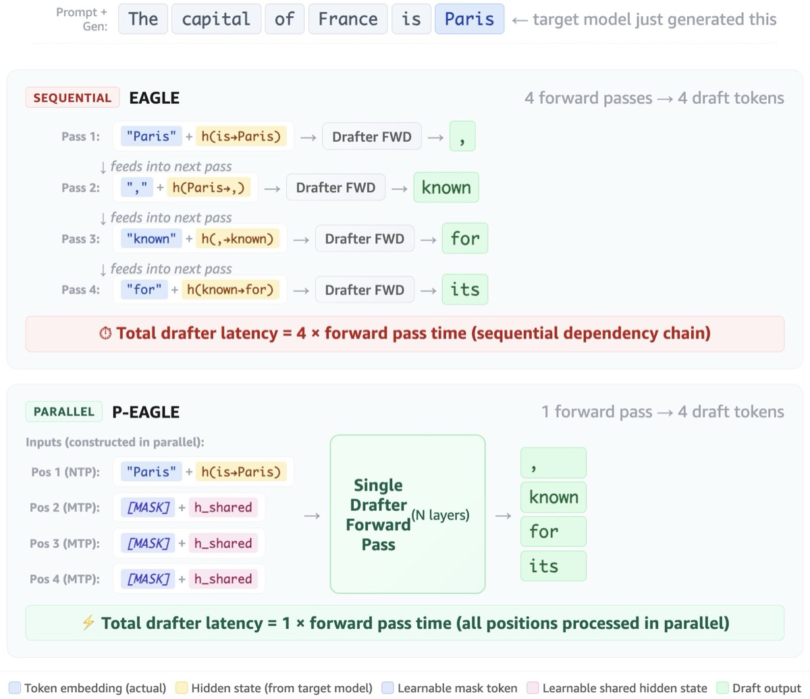
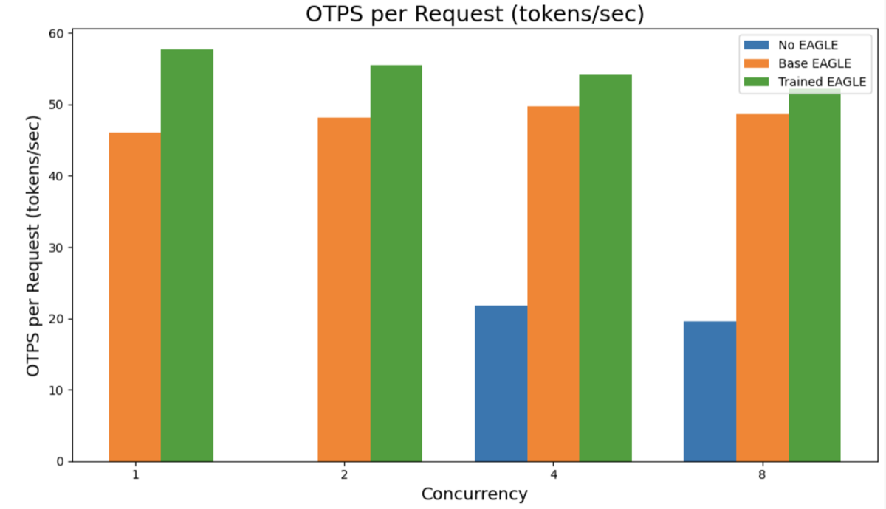

Books
2025

DeepSeek in Practice: From basics to fine-tuning, distillation, agent design, and prompt engineering of open source LLM Amazon US Packt Website
Authors: Andy Peng, Alex Strick van Linschoten, Duarte Carmo
Packt
Papers
In the pipeline — stay tuned.
AWS Blogs
2026

AWS BlogParallelize speculative decoding with P-EAGLE on Amazon SageMaker AI HTML
Authors: Andy Peng, Daniel Quang, Dan Ferguson, Siddharth Shah
Artificial Intelligence
2025

AWS BlogAmazon SageMaker AI introduces EAGLE based adaptive speculative decoding to accelerate generative AI inference HTML
Authors: Andy Peng, Kareem Syed-Mohammed, Ram Vegiraju, Vinay Arora, Xu Deng, Siddharth Shah, Johna Liu, Anisha Kolla
Artificial Intelligence